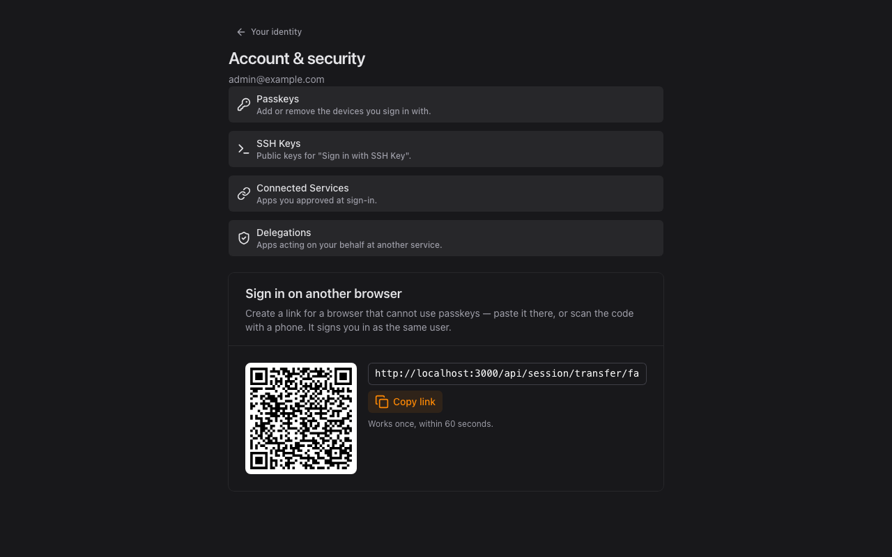

1 Find "Sign in on another browser"
The card sits at the bottom of your account page.

Bring your session to a browser that cannot use passkeys
Useful for kiosks, embedded browsers and agent panes.
The card sits at the bottom of your account page.
Paste the link in the other browser, or scan the code with a phone. It works once, for 60 seconds.
